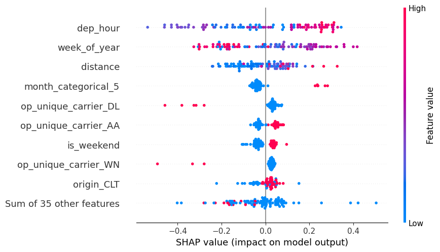
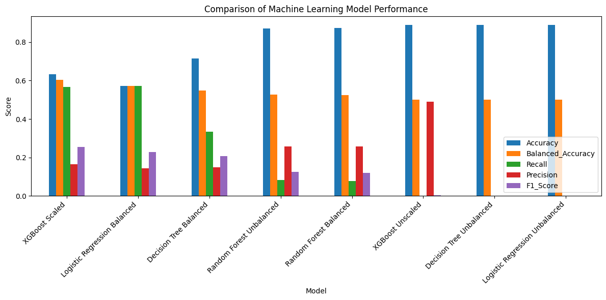
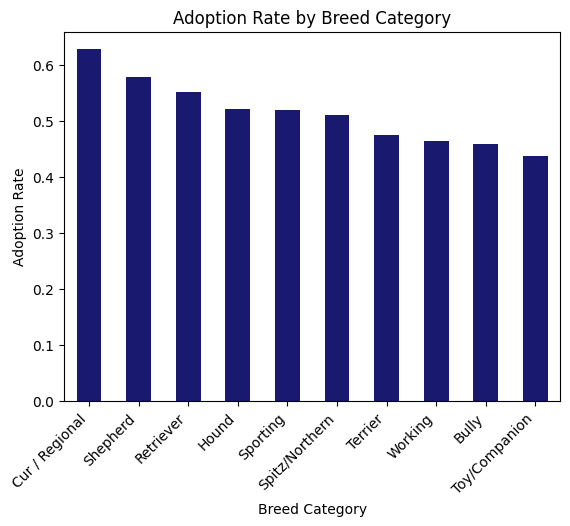
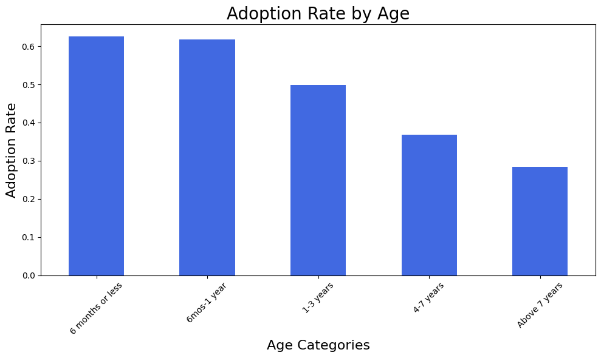

Predicting Controllable Flight Delays
Compared Decision Tree, Random Forest, Logistic Regression and XGBoost models, worked through class imbalance and used SHAP to interpret the final model.


TECHNICAL PROJECTS + TOOLS
Selected Work tells the story behind my strongest projects. This page is the more technical side: full Python notebooks, model outputs, Power BI and Tableau files, and additional examples of how I have used different tools.
PYTHON + MACHINE LEARNING
I kept the complete notebooks with their code and outputs. The visuals below come directly from that work, so you can see the analysis quickly or open the full notebook if you want to go deeper.
Compared Decision Tree, Random Forest, Logistic Regression and XGBoost models, worked through class imbalance and used SHAP to interpret the final model.


Worked with more than 173,000 shelter records, created analytical breed categories, explored adoption patterns and built a logistic regression model for adoption outcomes.


The model evaluation was about 74.9% accuracy, 83.6% recall and a 0.77 F1 score. The full notebook also shows the cleaning, exploratory analysis, feature creation, coefficient table and odds ratios rather than only the final model.
DATA VISUALIZATION
I learned pretty quickly that making a chart and making a useful dashboard are not the same thing. These projects gave me practice choosing visuals for the question, building filters and slicers, comparing designs and deciding what a viewer actually needs to see.
I built iterative Power BI dashboards and a final Tableau data story using Connecticut accidental drug related death data from 2012 through 2023. The work explored deaths over time and patterns by drug, gender, age and race.
I created Tableau views exploring patient outcomes, doctor satisfaction, revenue gains and losses, insurance profit margins and demographic patterns. I also created alternative chart designs while deciding which visual communicated each question most clearly.
Bar and column charts, treemaps, scatterplots, line charts, KPI cards, filters and slicers were useful only when they helped answer the question. I spent time comparing layouts and deciding how much information belonged on one screen without making the result harder to use.
MORE TECHNICAL WORK
These projects show other parts of my toolkit without repeating the full case studies.
I started with a facility level question, extracted SAMHSA tables from PDF using Excel Get Data, evaluated the source limitations and investigated North Carolina sources when state level aggregation could not answer the original question.
Customizable health tracking, trend comparisons, event history and pattern detection concepts built around pet care information I actually wanted to organize.
See wireframes and prototype →RESEARCH SYNTHESISInterdisciplinary literature synthesis and conceptual modeling across forensic accounting, psychology, behavioral ethics and criminology.
See research poster →EXPERIMENTAL RESEARCHRepeated measurement, operational definitions, a single subject AB design and real behavioral data from a 34 day study.
See graphs, presentation and manuscript →THE STORIES BEHIND THE WORK
Selected Work explains why I chose the questions, how I made decisions and what I took away from the results.